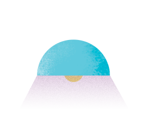

<section class="main">
  <div class="container">

    <div class="content">
      
      <h1> Quer fazer parte desse projeto? </h1>

      <p class="description">
        O Jovem Programador é um projeto criado pela Designa em parceria com a iMasters com objetivo de ensinar programação para crianças e jovens a partir dos 7 anos de idade.
      </p>

      <a href="#" class="btn primary"> Participar</a>
    </div>

    <div class="illustration">
      
      
    </div>
  </div>
</section>
